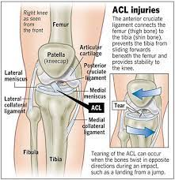

전방 십자 인대 부상
전방십자인대부상은
전방 십자 인대가 늘어나거나 부분적으로 찢어지거나 완전히 파열되어 발생한다.
가장 흔한 부상은 완전 파열이다. 증상으로는 통증, 손상 과정에서 투둑 소리,무릎관절의 불안정, 관절 부종이 나타난다.
붓기는 일반적으로 몇 시간 이내에 나타난다.
약 50%의 경우, 무릎 주위 인대, 연골, 수막 등의 다른 구조물이 손상된다.

부상의 원인
- 신속한 방향 변경
- 점프에서 어색하게 착지
- 주행시 갑자기 중지됨
- 무릎에 직접 접촉 또는 충돌
- 무릎 관절의 뒤틀림
- 관절가동범위확장운동
- 대퇴사두근 강화운동
- 열린사슬운동
- 닫힌사슬운동
- 스포츠 활동